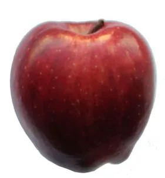

Colour and seeing
- Best starting classification
- Motif, with symbolic possibilities
- Development to track
- Unexplained perception → naming → judgement and isolation
A HUSKYDADDY NOVEL STUDY
Follow patterns and changes without turning the novel into a code of fixed meanings.
KEY IDEA
Trace a pattern before assigning a meaning.
Explain what changes across appearances instead of translating an object into one fixed answer.
A motif recurs and develops; a symbol carries significance beyond its literal role; a euphemism softens a troubling reality; a setting concept organizes the imagined world. One element may serve several functions, but the label must fit the evidence.
Full-novel analysis is hidden. Choose “Full novel” above when you are ready. Chapter-by-chapter notes remain available in the reading guide.

Grayscale renderingEvidence note: Novel events below are paraphrased. Chapter numbers locate the relevant events; use page numbers from your own edition in formal MLA writing. Interpretations are arguments to test, not verified statements of authorial intention.
A motif is a recurring feature whose repetitions and changes build meaning. Colour develops from an unexplained change in the apple (Ch. 3) to an experience Jonas can name and evaluate (Ch. 12). Seeing also includes the unusual eyes and the Capacity to See Beyond. These literal features can support symbolic interpretations of insight and difference, but they are not interchangeable with moral goodness.
The important development is from noticing to understanding to questioning. In Chapter 13, Jonas cannot simply make Asher share his perception, exposing the limits of individual insight. Write about how the pattern changes a relationship or possibility. Saying red means freedom is less precise than explaining how seeing alternatives allows Jonas to question a world that has removed them.
Memory is a literal mechanism of the fictional world and a recurring subject through which the novel develops judgement. Transmitting snow, hunger, warfare, and love changes what Jonas can understand. It is therefore useful to call memory a central motif, while explaining its concrete functions before assigning symbolic significance.
Chapter 14 pairs public advice based on remembered hunger with private comfort given to Gabriel. The repetition connects knowledge with different forms of care. Chapter 18 then shows memories moving beyond the role designed to contain them.
This pattern complicates any definition of memory as only personal experience or only suffering. Ask who receives it, who benefits, and who bears its emotional cost at each stage.
Dreams recur in different forms. The Fiona dream in Chapter 5 enters an official morning ritual and leads to treatment for the Stirrings. The sled dream in Chapter 12 is withheld under Jonas’s new instructions and involves a destination he cannot fully grasp. The contrast connects dreams with changing boundaries between private experience and public explanation.
A dream need not be a reliable prediction to matter. It can reveal desire, uncertainty, or an experience that ordinary language has not contained. After finishing, readers may connect the sled dream with the final descent, but that retrospective interpretation must not appear as knowledge available to Jonas in Chapter 12. The motif develops through difference, not through one fixed equation of every dream with prophecy.
Repeated attention to wording shapes both small corrections and major revelations. Jonas’s self-correction in Chapter 1, Asher’s punishment history in Chapter 7, and the conversation about love in Chapter 16 concern different stakes. Together they establish a pattern in which acceptable expression helps determine acceptable understanding.
Precision can be useful: distinguishing fear from uncertainty is not automatically manipulation. The problem is the use of precision to close a question rather than clarify it. When love is dismissed instead of explored, a language rule limits emotional inquiry.
Analyse the surrounding dialogue and consequence before deciding what a correction does. This makes a theme about language more defensible than claiming that careful speech itself is always harmful.
The sled has a literal role in transmitted experiences and in Jonas’s final perceptions. Its symbolic possibilities grow because its role changes. Chapter 11 associates it with pleasure and discovery; Chapter 14 connects it with injury; Chapter 23 returns to it under conditions of physical danger and possible welcome.
A symbol does not need one permanent translation. The sequence can represent movement into a fuller experience containing delight and risk, while the final descent can support different readings of hope and survival. Explain which appearance you are interpreting and how another appearance qualifies it. Treating the sled only as happiness ignores the painful ride; treating it only as death ignores its earlier delight and the ending’s uncertainty.
Elsewhere names what lies beyond the known community, but early references also make it part of official explanations about departure. It functions first as a setting concept: an imagined outside that characters do not adequately understand. Its vagueness can suggest possibility, distance, or reassurance without establishing a specific destination.
The release recording in Chapter 19 makes one comforting use of the term untenable, while Jonas’s journey in Chapters 21–23 makes a physical outside real and difficult. Do not collapse these uses into the claim that Elsewhere always means death or always means a confirmed refuge. The changing concept supports analysis of how limited knowledge can make an unknown place carry meanings the evidence does not yet secure.
A euphemism replaces a troubling reality with a less disturbing expression. Release becomes a clear example when Chapter 19 reveals killing behind an accepted term. Its earlier appearances in announcements, ceremonies, and conversations build a recurring language pattern before Jonas knows the practice’s meaning.
Release is not best treated as an object-symbol. It is a word whose institutional use shapes understanding and judgement. The term can sound like a managed transition or relief, while the recording exposes a consequence that such language concealed from Jonas.
Distinguish the word’s effect from a proven private intention in every speaker. A paragraph can trace an early use and the later revelation, explaining how the reader’s reinterpretation connects language with restricted knowledge.
Read across to compare; use stacked rows for a closer view.
| Element | Best starting classification | Development to track |
|---|---|---|
| Colour and seeing | Motif, with symbolic possibilities | Unexplained perception → naming → judgement and isolation |
| Memory | Literal mechanism and motif | Experience → advice → shared consequences |
| Dreams | Motif | Reported private feeling → withheld experience → retrospective connection |
| Precision | Verbal motif | Useful distinction → correction → restriction |
| Sled | Recurring object and symbol | Pleasure → injury → uncertain hope |
| Elsewhere | Setting concept / imagined promise | Official vagueness → disillusionment → physical unknown |
| Release | Euphemism in a recurring language pattern | Familiar term → witnessed action → ethical reinterpretation |
Discuss: which element would be most misleading if you assigned it one fixed meaning? Explain a detail that challenges your first answer.
Paragraph task: analyse two appearances of one element. Identify what stays similar, what changes, and how the change supports a theme. Do not rely on an equation such as sled = happiness.